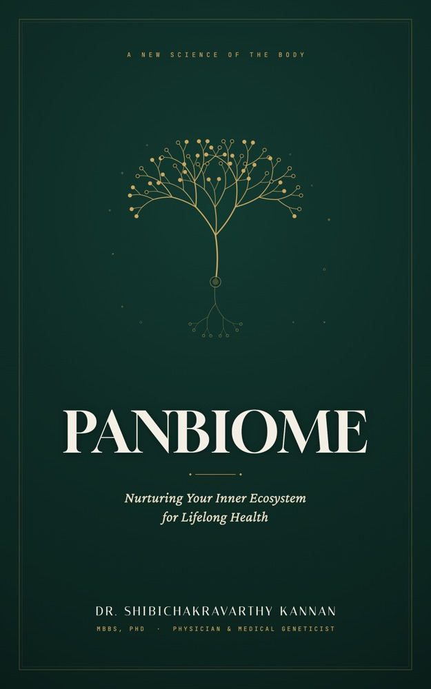

You are a walking, breathing ecosystem — and you have been one for a very long time.
Inside and on your body live tens of trillions of microbes — roughly matching your own human cells in number, and carrying more than a hundred times as many genes. Together they form what this book calls the Panbiome: your gut, skin, mouth, respiratory tract, and reproductive tract, working as one connected, living system.
“You don’t eat for you. You feed an entire community that, in turn, feeds you back.”
For most of medical history we missed this partnership entirely — and modern life has quietly unravelled it. PANBIOME is the story of that ancient relationship: how it shapes your mood, immunity, weight and cravings; how everyday habits erode it; and a practical, food-first plan — rooted in South Indian, Mediterranean and Okinawan traditions — to restore it in weeks.
Eighteen chapters across four parts, plus two intimate, doctor-narrated chapters on women’s health and the first 1,000 days of life.
Your full-body ecosystem, the gut–brain “second brain,” and how immunity and metabolism are run by your microbes.
Ultra-processed food, low fibre, antibiotic overuse, stress, screens, and the hygiene paradox.
The 30-plant challenge, a 7-Day Gut Reset, your personal Panbiome Dashboard, calming the mind–gut loop, and the truth about supplements.
Personalised microbiome medicine, the next decade of health, and lessons from the Mediterranean and Okinawan tables.
Simple, memorable, and grounded in landmark microbiome research.
A healthy microbiome is a diverse rainforest, not a monoculture farm. Diversity is resilience.
Aim for 30+ different plant types a week — the variety, not the quantity, is what feeds a thriving gut.
A gentle, day-by-day plan of real Indian food and small habits — your microbes respond in 24–48 hours.
Track energy, mood, digestion and more. Turn a vague “I feel off” into clear, personal data.
A bonus collection of Panbiome-friendly recipes spanning South Indian, Mediterranean and Okinawan kitchens — every dish chosen to feed your inner rainforest.
Open the Recipe Book